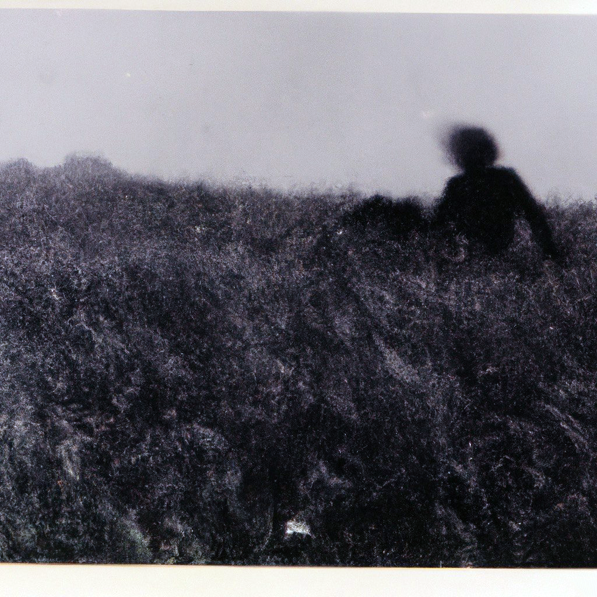

Generative AI Experiment, PyTorch, Causal Language Modeling, 2024
Love is inherently an act of misconception. When we don't know someone fully, we project our ideals into the negative space of their existence. It is this illusion that we fall in love with. Paradoxically, the more we know someone, the less we love them - the raw data of their reality slowly overwrites the perfection of our projection. When a relationship ends, what remains is not the person, but the corrupted data of who we thought they were.
The Necessary Gradual Descent of What We Used To Be is an interactive terminal artwork built from the digital remains of a severed relationship. Using a dataset of over 40,000 extracted text messages between myself and a former partner, I fine-tuned three distinct instances of a Causal Language Model: one trained on our shared history (The Relationship), one trained exclusively on my voice, and one trained exclusively on hers.
The models are not placed into a continuous conversation. That would imply a genuine connection. Instead, this is inherently a one-sided project - a meta-recursive loop of me projecting what I think, and what I think she thinks. To reflect this, the system repeatedly asks a single, unchanging prompt: "I miss you."
With each iteration, their architectures are intentionally traumatized at escalating rates to reflect our divergent psychological states:
Her Agent (The Unlearning): She remembers me, but the memory is slowly being erased. To simulate this, her model is subjected to escalating Gradient Ascent. Instead of training the model to learn my voice, the system is forced to maximize its error on my messages, mathematically unlearning my existence. By the final iterations, her ability to form syntax is completely destroyed - the machine actively burning away the pathways where my memory lived until only digital static remains.
My Agent (The Hallucination): I think about our history until it frays, unable to distinguish between what happened and what I dreamt. To simulate this, my model is subjected to cumulative Weight Degradation - injecting escalating Gaussian noise directly into its neural pathways to induce memory decay. As the static builds, the model desperately holds onto my specific vocabulary and slang, but its logic collapses into pure paranoia and recursive trauma-dumping.
The resulting sweeps - read aloud by disjointed text-to-speech engines - are not dialogues. They are the algorithmic truth of a severed connection: one machine screaming into the void, desperately trying to construct a reality that no longer exists, while the other is systematically erased from existence.
Note: The intended format for this piece is a physical installation with dual disjointed text-to-speech engines echoing in an empty room. For now, an archival web terminal has been provided below.